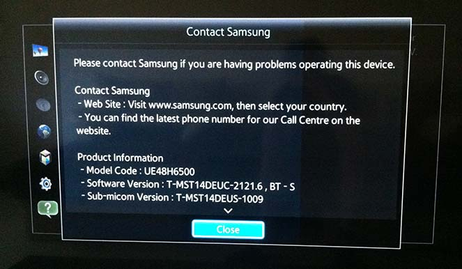
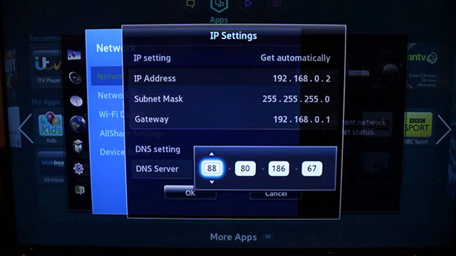
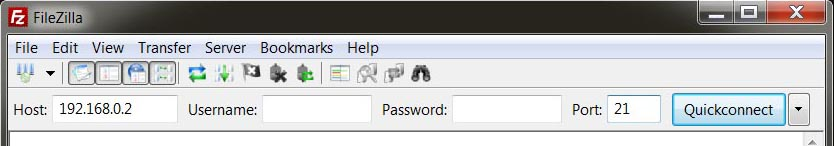
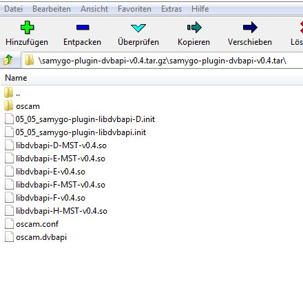
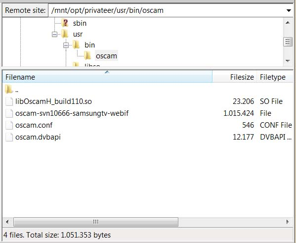
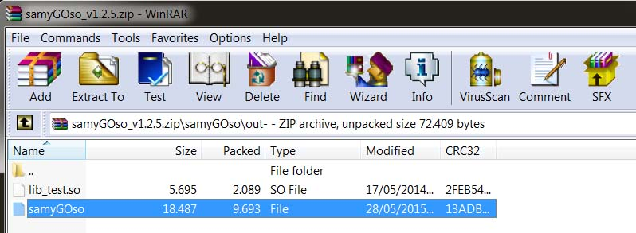
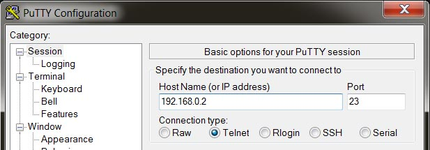

Tutorial
Prerequisites
This tutorial is for
rooted Samsung smart tv
series D(only T-MST version)/E/F/H.
There is no root and no oscam for series J.
The following steps are for E/F/H only, check the differences for
series D at the bottom of the page.
To find out your tv series and firmware version, press the
MENU button
on the remote control, then navigate to
SUPPORT->CONTACT SAMSUNG.

Here you can see the tv series (UE48H6500), the firmware type (T-MST14DEUC-2121.6) and the firmware version (T-MST14DEUC-2121.6).
Step 1 - Root the tv
Rooting is the process of allowing users of smartphones, tablets and other devices to attain privileged control (known as root access)
To learn how to root your smart tv, visit
samygo.tv
and follow their instructions. You will need the private root, not the public one, and to access it
you must be in the samygo donors group.
- root for series H: http://forum.samygo.tv/viewtopic.php?f=70&t=8469 (root available only for firmware version up to 2781)
- root for series E/F: http://forum.samygo.tv/viewtopic.php?f=70&t=7982
- root for series D(T-MST): https://wiki.samygo.tv/index.php5?title=Root_access_for_D_series_Mstar_cpu_models
Step 2 - Determine the tv ip address
Press the
MENU button on the remote control, then navigate to
NETWORK->NETWORK STATUS->IP SETTINGS.

Step 3 - Unzip oscam.zip and upload to tv
You can download FileZilla, a free ftp client, from
here.
Then input your tv ip address in the host field, set 21 as the port and press the Quickconnect button.
Then set the menu
Transfer->Transfer type to Binary.

Download release from
here, unpack it and upload the oscam folder to
/mnt/opt/privateer/usr/bin.

Copy only the .so file containing the letter of your tv series to the newly created
/mnt/opt/privateer/usr/bin/oscam folder.

To enable the autorun, copy 05_05_Oscam.init to
/mnt/etc/init.d/.
Step 4 - Update samyGOso
Download samyGOso_v1.2.5.zip from
here and unzip it.
Then copy the file samyGOso from the unzipped folder
\samyGOso\out-\ to the tv folder
/mnt/opt/privateer/usr/bin/. Make sure you replace the existing one.

Step 5 - Add executable attribute
Download Putty from
here. Again, input your tv ip address in the Host Name field and make sure you select Telnet as Connection type. Then click the Open button to start a session.

Enter the following command in the opened command shell:
chmod 755 /mnt/opt/privateer/usr/bin/samyGOso
chmod 755 /mnt/opt/privateer/usr/bin/oscam/oscam-svn10666-samsungtv-webif
chmod 755 /mnt/etc/init.d/05_05_Oscam.init
Final step
Reboot the tv, wait for about 30 seconds and then use your web browser to connect to oscam (http://
:8888) and setup your servers.
Differences for series D
- download the latest samyGOso from here and follow theirs instructions to set it up.
- upload the oscam folder to /mtd_rwdata/oscam
- copy 05_05_Oscam_series_D.init to /mtd_rwdata/widgets/user/SamyGO/SamyGO/etc/init.d
- set executable permission by running:
chmod +x /mtd_rwdata/widgets/user/SamyGO/SamyGO/etc/init.d/05_05_Oscam.init
chmod +x /mtd_rwdata/oscam/oscam-svn10666-mipsel-webif